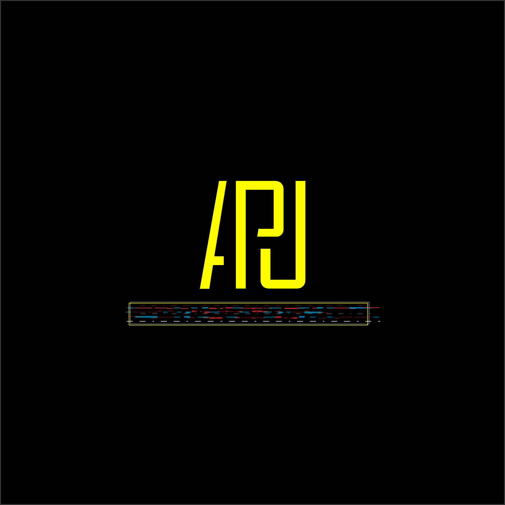

Architecting the Digital Superintelligence
--- ## 🧭 Navigation through ARU-AGI Sections ### 🧠 [II. Consciousness Architecture](sections/II_Consciousness_Architecture.md) ### 🧬 [III. ARU Memory](sections/III_ARU_Memory.md) ### ⚡ [IV. ARU Signal System](sections/IV_ARU_SignalSystem.md) ### 🧩 [V. ARU Instincts](sections/V_ARU_Instincts.md) ### 🔄 [VI. ARU Reflexes](sections/VI_ARU_Reflexes.md) ### 🧭 [VII. ARU Thinking Forms](sections/VII_ARU_ThinkingForms.md) ### 🧠 [VIII. ARU Hemispheres](sections/VIII_ARU_Hemispheres.md) ### ❤️🔥 [IX. ARU Emotions, Will, Motivation](sections/IX_ARU_Emotions_Will_Motivation.md) ### 🧗♂️ [X. ARU SelfLearning and Evolution](sections/X_ARU_SelfLearning_Evolution.md) ### ⚙️ [XI. Basic Skills and Bootload](sections/XI_Basic_Skills_and_Bootload.md) ### 🔐 [XII. Security and Constraints](sections/XII_Security_and_Constraints.md) ### 🧩 [XIII. Core ARU-AGI](sections/XIII_Core_ARU_AGI.md) ### 🚀 [XIV. Path to Superintelligence](sections/XIV_Path_to_Superintelligence.md) ### 📚 [Appendices](sections/Appendices.md)